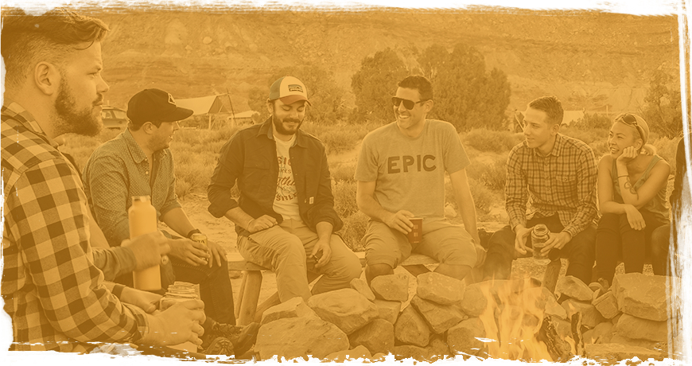
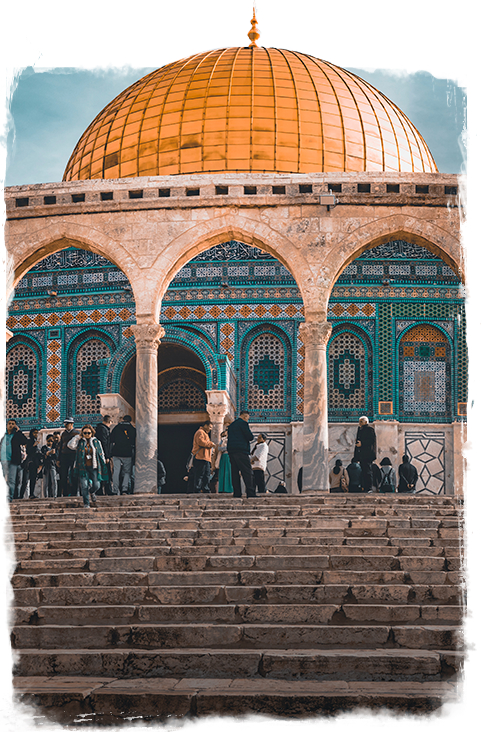
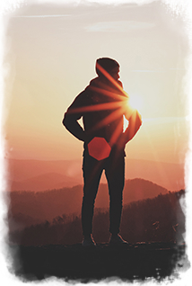

<!DOCTYPE html>
<html lang="ru">
<head>
  <meta charset="UTF-8">
  <meta name="viewport" content="width=device-width, initial-scale=1.0">
  <meta http-equiv="X-UA-Compatible" content="ie=edge">
  <meta name="format-detection" content="telephone=no">
  <link rel="preload" href="fonts/firasans.woff2" as="font" crossorigin="anonymous">
  <link rel="preload" href="fonts/montserrat.woff2" as="font" crossorigin="anonymous">
  <link rel="preload" href="fonts/raleway.woff2" as="font" crossorigin="anonymous">
  <title>MasaIsrael</title>
  <meta name="Description" content="Учёба, путешествие и карьера для еврейской молодёжи +(972)2–621–6581">
  <link rel="stylesheet" href="css/style.min.css">
</head>
<body>
  <div style="display:none">
    <include src="build/img/sprite_auto.svg"></include>
  </div>
  <header class="page-header">
    <div class="page-header__wrap">
      <a  class="page-header__phone" href="tel:+97226216581" aria-label="Телефон">
        <p class="page-header__tel">+ (972) 2 – 621 – 6581</p>
      </a>
      <a class="page-header__logo">
        <picture>
          <source media="(max-width: 767px)" srcset="img/logo-mob.png">
          
        </picture>
      </a>
      <button class="page-header__button" type="button">заказать звонок</button>
    </div>
  </header>
  <main class="page-main">
    <h1 class="page-main__head visually-hidden">Проект Маса Израиль</h1>
    <section class="page-main__slogan slogan">
      <div class="slogan__wrap">
        <p class="slogan__content">Учёба, путешествие и карьера для еврейской молодёжи</p>
      </div>
      <a href="#" aria-label="Прокрутить вниз">#</a>
    </section>
    <section class="page-main__description description">
      <h2 class="description__head">О программе</h2>
      <p class="description__content">«Маса» — совместный проект правительства Израиля и Еврейского агентства Сохнут. Более 250 учебных программ (60 на русском) и возможность стажировки в Израиле.
В течение освоения программ предусмотрен грант от 4200 до 8400$.</p>
      <div class="description__video">
        <picture>
          <source media="(max-width: 767px)" srcset="img/video-mob@1x.jpg 1x, img/video-mob@2x.jpg 2x">
          
        </picture>
      </div>
    </section>
    <section class="page-main__programs programs">
      <div class="programs__keypad">
        <button class="programs__button" type="button">Общие</button>
        <button class="programs__button" type="button">Академические</button>
        <button class="programs__button" type="button">Стажировки</button>
        <button class="programs__button" type="button">Волонтёрство</button>
        <button class="programs__button" type="button">Религиозные</button>
      </div>
      <div class="programs__slider">
        <div class="programs__slide">
          <h3 class="programs__title">Общие</h3>
          <p class="programs__content">Провести семестр или год за рубежом, знакомясь с различными культурами
и идеями, традициями и стилем жизни — вот что такое учеба за границей! Израиль — это не только центр религиозного мира, это  также академический центр, живая лаборатория идей и творческого исследования.
          Может быть, Вы заинтересованы в изучении социологии, мира, юриспруденции, биологии, сравнительной религии, законодательного
и делового администрирования или искусства? Здесь, в Израиле, Вы сможете
          изучить все это в удивительной университетской среде.</p>
        </div>
        <div class="programs__slide">
          <h3 class="programs__title">Академические</h3>
          <p class="programs__content">Провести семестр или год за рубежом, знакомясь с различными культурами
и идеями, традициями и стилем жизни — вот что такое учеба за границей! Израиль — это не только центр религиозного мира, это  также академический центр, живая лаборатория идей и творческого исследования.
          Может быть, Вы заинтересованы в изучении социологии, мира, юриспруденции, биологии, сравнительной религии, законодательного
и делового администрирования или искусства? Здесь, в Израиле, Вы сможете
          изучить все это в удивительной университетской среде.</p>
        </div>
        <div class="programs__slide">
          <h3 class="programs__title">Стажировки</h3>
          <p class="programs__content">Провести семестр или год за рубежом, знакомясь с различными культурами
и идеями, традициями и стилем жизни — вот что такое учеба за границей! Израиль — это не только центр религиозного мира, это  также академический центр, живая лаборатория идей и творческого исследования.
          Может быть, Вы заинтересованы в изучении социологии, мира, юриспруденции, биологии, сравнительной религии, законодательного
и делового администрирования или искусства? Здесь, в Израиле, Вы сможете
          изучить все это в удивительной университетской среде.</p>
        </div>
        <div class="programs__slide">
          <h3 class="programs__title">Волонтёрство</h3>
          <p class="programs__content">Провести семестр или год за рубежом, знакомясь с различными культурами
и идеями, традициями и стилем жизни — вот что такое учеба за границей! Израиль — это не только центр религиозного мира, это  также академический центр, живая лаборатория идей и творческого исследования.
          Может быть, Вы заинтересованы в изучении социологии, мира, юриспруденции, биологии, сравнительной религии, законодательного
и делового администрирования или искусства? Здесь, в Израиле, Вы сможете
          изучить все это в удивительной университетской среде.</p>
        </div>
        <div class="programs__slide">
          <h3 class="programs__title">Религиозные</h3>
          <p class="programs__content">Провести семестр или год за рубежом, знакомясь с различными культурами
и идеями, традициями и стилем жизни — вот что такое учеба за границей! Израиль — это не только центр религиозного мира, это  также академический центр, живая лаборатория идей и творческого исследования.
          Может быть, Вы заинтересованы в изучении социологии, мира, юриспруденции, биологии, сравнительной религии, законодательного
и делового администрирования или искусства? Здесь, в Израиле, Вы сможете
          изучить все это в удивительной университетской среде.</p>
        </div>
      </div>
    </section>
    <section class="page-main__callback callback">
      <h2 class="callback__head visually-hidden">Заказать обратный звонок</h2>
      <p class="callback__title">Хочу поехать!</p>
      <p class="callback__text">Оставьте свой телефон и мы свяжемся с вами, подберём куратора и ответим на все вопросы!</p>
      <form class="callback__form" action="https://echo.htmlacademy.ru" method="post">
        <input class="callback__input" name="telephone" type="text" id="phone" value="" placeholder="Телефон" maxlength="16" required="required">
        <label class="callback__label" for="phone">перезвоните мне</label>
      </form>
    </section>
    <section class="page-main__conditions conditions">
      <h2 class="conditions__head">Как поехать</h2>
      <p class="conditions__content">Чтобы узнать подробнее о программе, свяжитесь с координатором в вашем городе. Вы получите актуальные сведения о доступных программах и городах, в которых можете пройти программу.</p>
      <p class="conditions__text">Чтобы иметь возможность получить грант на обучение
от 4200 до 8400$, вы должны:</p>
      <ul class="conditions__list">
        <li class="conditions__item">Быть в возрасте от 16 до 30 лет</li>
        <li class="conditions__item">Иметь оконченное среднее образование</li>
        <li class="conditions__item">Иметь документально подтверждённые еврейские корни
и пройти консульскую проверку</li>
        <li class="conditions__item">За последние 2 года быть не больше 3х месяцев подряд непрерывно в Израиле.</li>
      </ul>
      <p class="conditions__remark">Если вы не подходите по этим правилам, вы всё равно можете принять участие в программе «Маса», оплатив её полную стоимость.</p>
    </section>
    <section class="page-main__advantages advantages">
      <h2 class="advantages__head">Жизнь в израиле</h2>
      <p class="advantages__content">Помимо учёбы, в рамках программы у вас будет возможность путешествовать по стране и познакомиться с богатой культурно-исторической жизнью Израиля и его жителей.</p>
      <div class="advantages__wrap">
        <div class="advantages__unit">
          <picture>
            <source media="(max-width: 767px)" srcset="img/video-mob@1x.jpg 1x, img/video-mob@2x.jpg 2x">
            
          </picture>
          <p class="advantages__title">Экскурсии по Израилю
 и знакомство с его историей</p>
        </div>
        <div class="advantages__unit">
          <picture>
            <source media="(max-width: 767px)" srcset="img/hebrew-mob@1x.jpg 1x, img/hebrew-mob@2x.jpg 2x">
            
          </picture>
          <p class="advantages__title">Изучение иврита</p>
        </div>
        <div class="advantages__unit">
          <picture>
            <source media="(max-width: 767px)" srcset="img/study-mob@1x.jpg 1x, img/study-mob@2x.jpg 2x">
            
          </picture>
          <p class="advantages__title">Обучение современным навыкам и профессиям</p>
        </div>
        <div class="advantages__unit">
          <picture>
            <source media="(max-width: 767px)" srcset="img/creation-mob@1x.jpg 1x, img/creation-mob@2x.jpg 2x">
            
          </picture>
          <p class="advantages__title">Совместные творческие проекты
с израильской молодёжью</p>
        </div>
        <div class="advantages__unit">
          <picture>
            <source media="(max-width: 767px)" srcset="img/leader-mob@1x.jpg 1x, img/leader-mob@2x.jpg 2x">
            
          </picture>
          <p class="advantages__title">Развитие
 лидерства</p>
        </div>
      </div>
    </section>
    <section class="page-main__blogs blogs">
      <span class="blogs__hashtag">#masaisrael</span>
      <p class="blogs__content">Познакомьтесь с программой  от первого лица! Многие участники ведут блоги и фотодневники
о жизни, учёбе и путешествиях в Израиле.</p>
      <a class="blogs__link" href="#">смотреть фото</a>
    </section>
    <section class="page-main__questions questions">
      <h2 class="questions__head">частые вопросы</h2>
      <ul class="questions__list">
        <li class="questions__item">
          <h3 class="questions__title">Кто организатор? Какие сроки у программы?</h3>
          <p class="questions__content">Полная стоимость определяется организаторами в зависимости от направления. В большинстве случаев грант «Маса» не покрывает полную стоимость программы, и поэтому предусматривается определённая доля личного участия.</p>
        </li>
        <li class="questions__item">
          <h3 class="questions__title">Что такое грант на обучение?</h3>
          <p class="questions__content">Полная стоимость определяется организаторами в зависимости от направления. В большинстве случаев грант «Маса» не покрывает полную стоимость программы, и поэтому предусматривается определённая доля личного участия.</p>
        </li>
        <li class="questions__item">
          <h3 class="questions__title">Как определяется стоимость программы?</h3>
          <p class="questions__content">Полная стоимость определяется организаторами в зависимости от направления. В большинстве случаев грант «Маса» не покрывает полную стоимость программы, и поэтому предусматривается определённая доля личного участия.</p>
        </li>
        <li class="questions__item">
          <h3 class="questions__title">Что такое грант на обучение?</h3>
          <p class="questions__content">Полная стоимость определяется организаторами в зависимости от направления. В большинстве случаев грант «Маса» не покрывает полную стоимость программы, и поэтому предусматривается определённая доля личного участия.</p>
        </li>
        <li class="questions__item">
          <h3 class="questions__title">Признаётся ли учеба в рамках проекта для дальнейшего обучения?</h3>
          <p class="questions__content">Полная стоимость определяется организаторами в зависимости от направления. В большинстве случаев грант «Маса» не покрывает полную стоимость программы, и поэтому предусматривается определённая доля личного участия.</p>
        </li>
        <li class="questions__item">
          <h3 class="questions__title">Как выглдядит полный процесс регистрации
на программу «Маса»?</h3>
          <p class="questions__content">Полная стоимость определяется организаторами в зависимости от направления. В большинстве случаев грант «Маса» не покрывает полную стоимость программы, и поэтому предусматривается определённая доля личного участия.</p>
        </li>
      </ul>
    </section>
    <section class="page-main__comments comments">
      <h2 class="comments__head">Отзывы</h2>
      <div class="comments__slider">
        <div class="comments__slide">
          <picture>
            <source media="(max-width: 767px)" srcset="img/foto-mob@1x.jpg 1x, img/foto-mob@2x.jpg 2x">
            
          </picture>
          <div class="comments__wrap">
            <p class="comments__name">Ольга Михайлова</p>
            <span class="comments__program">Программа:</span>
            <p class="comments__nomination">Арт-Тель, февраль-сетнябрь 2017</p>
            <p class="comments__content">Долго выбирая программу, на которую ехать - я определилась, взяла на 5 месяцев «иврит как культура». Мне очень повезло оказаться в надежных и заботливых руках Анны, Юлии и Олега.
            С первой же встречи тебе дают понять - что ты не один, у тебя есть практически круглосуточная поддержка по любым вопросам. Тебе предоставляют готовое удобное расписание, жилье, приятные встречи, языковой курс а еще и поездки всей программой в разные уголки страны. </p>
            <a href="#">Читать подробнее</a>
          </div>
        </div>
      </div>
      <div class="comments__cont">
        <button class="comments__left" type="button">Назад</button>
        <button class="comments__right" type="button">Вперед</button>
        <ul class="comments__social social">
          <li class="social__item">
            <a class="social__link" href="#" aria-label="Фейсбук">
              <svg class="social__icon social__icon--fb" width="24px" height="24px">
                <use xlink:href="#icon-fb"></use>
              </svg>
            </a>
          </li>
          <li class="social__item">
            <a class="social__link" href="#" aria-label="Твиттер">
              <svg class="social__icon social__icon--tw" width="24px" height="24px">
                <use xlink:href="#icon-twitter"></use>
              </svg>
            </a>
          </li>
          <li class="social__item">
            <a class="social__link" href="#" aria-label="Инстаграмм">
              <svg class="social__icon social__icon--inst" width="24px" height="24px">
                <use xlink:href="#icon-instagram"></use>
              </svg>
            </a>
          </li>
        </ul>
      </div>
    </section>
    <section class="page-main__details details">
      <h2 class="details__head">Узнать подробности</h2>

    </section>

  </main>

  <script>
    // Picture element HTML5 shiv
    document.createElement( "picture" );
  </script>
  <script src="js/picturefill.min.js" async></script>
</body>
</html>
